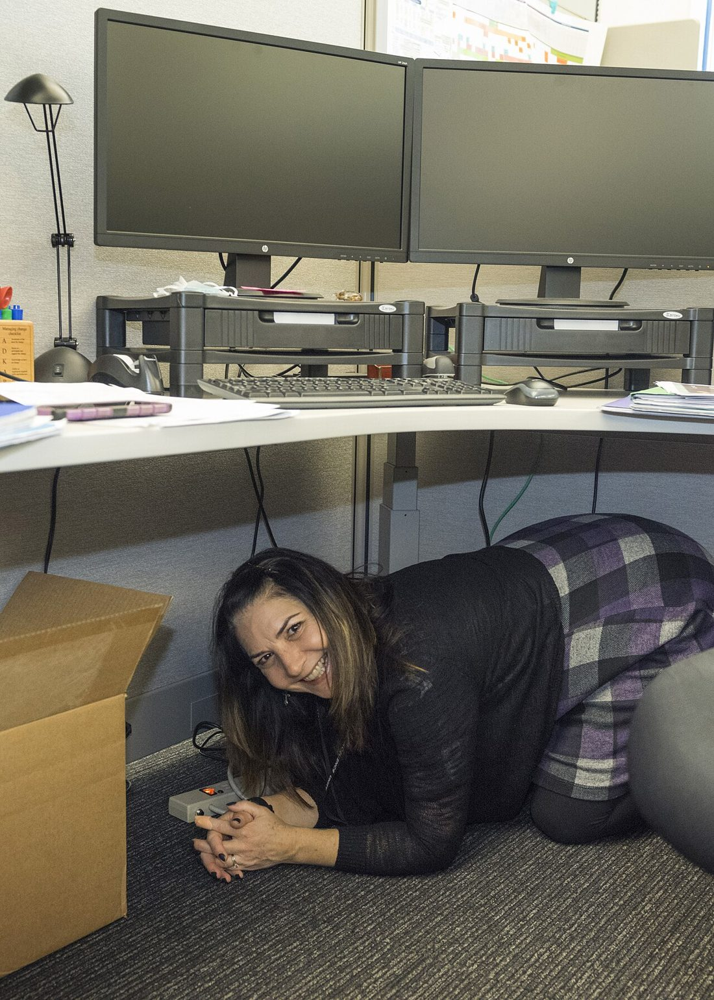

🧭 災難生存 · 實用小知識
🏚️ 地震當下與震後
台灣位於地震帶，強震隨時可能發生；戰爭期間的爆炸也可能造成類似的結構搖晃與倒塌。地震的傷害大多發生在最初的幾秒——被掉落物砸中、被傢俱壓住、在慌亂奔跑中跌倒。這篇教你在搖晃當下的正確動作、不同場所怎麼應變，以及震後那關鍵的幾小時該做什麼。

▲ 「趴下、掩護、穩住」是全球通行的地震保命動作。圖片：Oregon Department of Transportation，Wikimedia Commons，授權 CC BY 2.0。
當下的黃金動作：趴下、掩護、穩住
全球通行的地震保命三步驟，就是 「趴下（Drop）、掩護（Cover）、穩住（Hold On）」：
- 趴下：立刻蹲低、雙膝跪地趴下，降低重心避免被搖倒。
- 掩護：躲到堅固桌子底下，用手臂護住頭頸；沒有桌子就靠向堅固內牆的牆角、遠離窗戶與高傢俱。
- 穩住：抓住桌腳，讓身體隨桌子一起移動，直到搖晃完全停止。
⚠ 搖晃中千萬別做的事
- 不要奔跑或衝出門——移動時最容易被掉落物砸傷或跌倒。
- 不要搭電梯——可能停電受困。
- 不要站在窗邊、櫃子或吊燈下。
- 「躲在門框下」是過時觀念，現代建築門框未必較堅固，桌下或牆角更安全。
不同場所的應變
| 你在哪裡 | 該怎麼做 |
|---|
| 室內 | 趴下掩護穩住，遠離窗戶、外牆與高傢俱 |
| 床上 | 留在床上，用枕頭護住頭部（除非上方有重物會掉落） |
| 廚房 | 迅速遠離爐火與碗盤櫃，關火後就地掩護 |
| 戶外 | 移到空曠處，遠離建築、電線桿、招牌與圍牆 |
| 開車 | 減速停到路邊安全處，待在車內、遠離橋樑與陸橋 |
| 海邊 | 強震後盡快往高處撤離，慎防海嘯 |
震後第一時間（搖晃停止後）
- 確認傷勢：先檢查自己與家人，有人受傷依〈災難現場基本急救〉處理大出血與呼吸。
- 穿上鞋子：地上常滿是碎玻璃與掉落物，赤腳極易受傷。
- 檢查危險源：聞是否有瓦斯味、看是否有火源、漏水、漏電與結構裂縫。
- 防餘震：餘震隨時可能來，遠離受損牆面與可能再掉落的物品。
💡 聞到瓦斯味怎麼辦
立即關閉瓦斯總開關、打開窗戶通風，並且不要開關任何電器、不要按電燈開關、不要使用明火或打電話——任何火花都可能引爆。人員先撤到室外安全處再處理。相關火災應變見〈防火與滅火基礎〉。
被困住時的自救
- 保持冷靜，避免大動作揚起粉塵；用衣物摀住口鼻。
- 別盲目大喊耗盡體力與氧氣；改用敲擊管線、牆壁發出規律聲響求救。
- 聽到救援接近時再大聲呼喊，引導對方定位。
- 若有手機且有訊號，傳訊或撥打求救（求救技巧見〈通訊中斷時如何求救〉）。
- 保存體力，讓自己被聽見、被找到，耐心等待。
要不要撤離、去哪裡
搖晃停止後，若建築物出現明顯裂縫、傾斜、結構受損，或聞到無法排除的瓦斯味，應有序撤離到室外空曠的避難集合點（別搭電梯，走樓梯）。若建築看似安全、外面反而有掉落物風險，則可先在室內安全處待命。撤離與否的通則見〈該撤離還是就地避難〉，會合安排見〈家庭防災計畫〉。
善用地震預警：多爭取的幾秒很關鍵
台灣的地震預警系統會在強烈搖晃抵達前，透過手機的「國家級警報」（災防告警細胞廣播）發出提示。它利用地震波傳遞的時間差，可能替你爭取數秒到數十秒——這短短時間，足夠你趴到桌下、遠離窗戶、關掉爐火。因此：
- 別關閉手機的緊急警報功能，也別因為嫌吵而靜音。
- 收到預警時不要愣住或找手機看——第一反應就是趴下掩護穩住。
- 預警未必每次都及時（震央很近時搖晃幾乎同時到），所以它是加分、不是唯一依靠。
震後的生活與收容
大地震後可能面臨停水、停電、餘震不斷與需要撤離的情況，這時前面幾篇的準備就派上用場：
- 水電中斷：靠居家儲備與淨水維持基本生活（見〈居家儲備〉、〈如何把水變乾淨〉）。
- 需要撤離時：帶〈緊急避難包〉走樓梯到官方指定的避難收容處所，別搭電梯。
- 與家人失聯：依〈家庭防災計畫〉前往會合點、透過外地聯絡人互報平安。
- 接收正確資訊：以中央氣象署與地方政府公告為準，別被餘震謠言影響（見〈假訊息辨識〉）。
平時的居家耐震準備
- 固定高傢俱：把書櫃、高櫃、電視、熱水器固定在牆上，防止傾倒。
- 重物放低：重物、玻璃器皿放低處；床邊、沙發上方避免懸掛或擺放會掉落的重物。
- 備好避難包與照明：〈緊急避難包〉與手電筒放在床邊隨手可拿處，半夜地震也拿得到。
- 演練：和家人練習「趴下、掩護、穩住」與會合流程，讓動作成為反射。
💡 為什麼「演練」比「知道」更重要
地震發生時只有幾秒可反應，大腦來不及思考，靠的是身體的反射動作。只是「知道」要趴下掩護穩住還不夠——真正練過的人，才能在天旋地轉、東西亂掉的當下自動做出正確動作。每年花幾分鐘和家人實際演練一次，把保命動作變成肌肉記憶，這是所有準備裡投報率最高的一項。尤其家中有孩子時，更要一起練，讓他們在真正搖起來時知道往哪躲、跟著誰做。
✅ 30 秒速記
- 當下：趴下、掩護、穩住，別跑別擠電梯。
- 震後：確認傷勢、穿鞋、查瓦斯電力、防餘震。
- 瓦斯味：關總開關、開窗、別碰電器與明火。
- 受困：敲擊求救、摀口鼻、保存體力。
常見問答 FAQ
Q1. 地震當下最正確的動作？
趴下、掩護、穩住：蹲低躲桌下護頭頸、抓住桌腳；沒桌子就靠堅固牆角，遠離窗戶。
Q2. 該跑到戶外嗎？
不要在強烈搖晃中奔跑或衝出——移動時最易受傷。就地掩護，搖晃停止後再有序撤離。
Q3. 震後第一件事？
確認傷勢、穿鞋、檢查瓦斯電力火源與結構、防餘震。聞到瓦斯味先關總開關、開窗、別碰電器。
Q4. 被困住怎麼自救？
冷靜、摀口鼻、敲擊管線發聲求救而非狂喊，保存體力等待救援。
Q5. 平時怎麼準備？
固定高傢俱、重物放低、床邊備避難包與手電筒，並和家人演練保命動作與會合。
權威來源
※ 本文為一般地震防護參考，整理自中央氣象署、NCDR、Ready.gov 等公開資訊，不能取代官方即時指示。地震時請以現場安全與政府警報為準，受困時儘速撥打 119 求援。